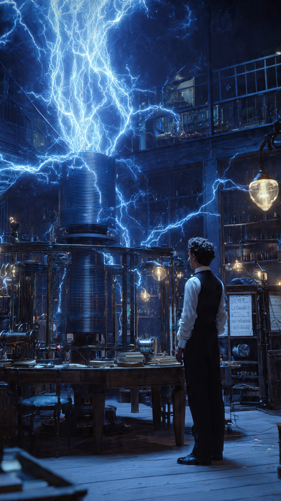
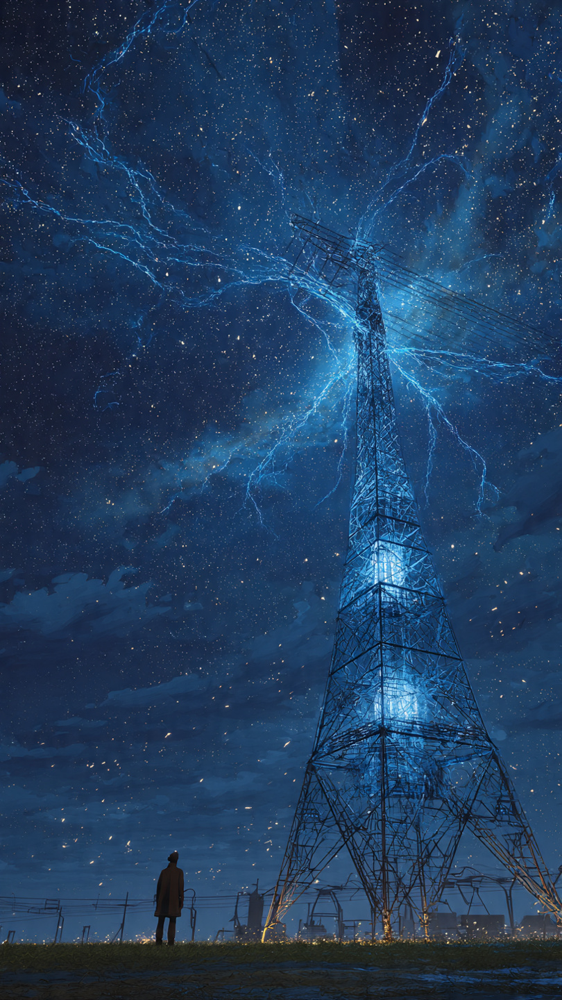

```html
اختراع تسلا السري الذي حاول نقل الكهرباء عبر الهواء | اكتشافات وعلوم
```
في عام 1901، وقف المخترع الصربي الأمريكي نيكولا تسلا أمام قطعة أرض واسعة في ولاية نيويورك.
كانت الأرض خالية تقريبًا.
لكن داخل عقله، كان يرى شيئًا مختلفًا تمامًا.
كان يتخيل برجًا عملاقًا يرسل الطاقة عبر الهواء، لتصل إلى مدن تبعد مئات الكيلومترات دون الحاجة إلى أسلاك.
في ذلك الوقت، بدت الفكرة أشبه بالخيال العلمي.
كان تسلا قد اشتهر بالفعل باختراعات غيرت العالم.
فقد ساهم في تطوير نظام التيار المتردد (AC)، وهو النظام الذي تعتمد عليه شبكات الكهرباء الحديثة في معظم دول العالم.
وأثبت أن الكهرباء يمكن نقلها لمسافات طويلة بكفاءة أعلى من التيار المستمر.
لكن بالنسبة إليه...
لم يكن هذا كافيًا.
كان يؤمن أن المستقبل يجب أن يكون بلا أسلاك.
ليس فقط في الاتصالات...
بل في نقل الطاقة نفسها.
تخيّل عالمًا يستطيع فيه أي شخص تشغيل أجهزته بمجرد وجودها داخل نطاق الإرسال، دون الحاجة إلى كابلات تمتد بين المدن.
وكان مقتنعًا أن الأرض والغلاف الجوي يمكن أن يساعدا في نقل الطاقة إذا استُخدما بالطريقة الصحيحة.
ولتحقيق هذا الحلم، بدأ بناء مشروع ضخم عُرف لاحقًا باسم برج واردنكليف.
كان البرج يرتفع عشرات الأمتار فوق سطح الأرض، بينما امتدت تحته بنية هندسية معقدة.
وقد موّل المشروع في بدايته رجل الأعمال الشهير جون بيربونت مورغان (J. P. Morgan)، الذي رأى في تسلا مخترعًا عبقريًا يستحق الدعم.
لكن مورغان كان يعتقد أن المشروع سيُستخدم لتطوير الاتصالات اللاسلكية.
أما تسلا...
فكان يفكر في شيء أكبر بكثير.
كل يوم، كان العمال يرفعون أجزاء البرج، بينما يقف تسلا يتأمل البناء بصمت.
كان واثقًا أن هذا المشروع سيغيّر العالم.
لكن مع مرور الوقت، بدأت المشكلات تظهر.
ازدادت التكاليف.
وتأخر التنفيذ.
وبدأ المستثمرون يطرحون سؤالًا واحدًا:
هل يمكن حقًا نقل الكهرباء عبر الهواء... أم أن تسلا يحلم بالمستحيل؟
📷 الصورة رقم 1

مع استمرار بناء برج واردنكليف، كان نيكولا تسلا يعمل ليلًا ونهارًا.
كان يقضي ساعات طويلة داخل المختبر، يختبر الملفات الكهربائية العملاقة، ويجري تجارب على الجهد العالي.
وفي بعض الليالي، كانت شرارات كهربائية ضخمة تضيء السماء فوق المختبر، حتى ظن بعض السكان أن البرق يخرج من البرج نفسه.
كان تسلا يؤمن أن هذه التجارب هي الخطوة الأولى نحو عالم جديد.
عالم يستطيع فيه الإنسان إرسال الطاقة والمعلومات عبر الهواء، دون الحاجة إلى آلاف الكيلومترات من الأسلاك.
لكن المشكلة أن إثبات هذه الفكرة على نطاق واسع كان أصعب بكثير مما توقع.
في تلك الفترة، كان المخترع الإيطالي غولييلمو ماركوني يحقق نجاحات كبيرة في مجال الاتصالات اللاسلكية.
واستطاع إرسال إشارات راديوية عبر المحيط الأطلسي، وهو إنجاز جذب اهتمام المستثمرين ووسائل الإعلام.
بدأت الأنظار تتجه إلى ماركوني، بينما أصبح مشروع تسلا يبدو أكثر غموضًا وأكثر تكلفة.
ثم جاءت الضربة الأقوى.
علم المستثمر جي. بي. مورغان أن تسلا لا يريد بناء برج للاتصالات فقط، بل يحاول أيضًا نقل الطاقة لاسلكيًا.
سأل مورغان سؤالًا شهيرًا:
"إذا كانت الكهرباء ستصل إلى الجميع مجانًا... فمن سيدفع ثمنها؟"
لم يكن السؤال علميًا.
بل كان اقتصاديًا.
وبعد فترة قصيرة، توقّف التمويل.
وتوقفت معه أعمال البناء.
حاول تسلا البحث عن ممولين جدد.
كتب رسائل.
وعرض أفكاره.
لكن أحدًا لم يكن مستعدًا لتمويل مشروع بهذا الحجم، دون دليل عملي واضح على نجاحه.
ومع مرور الأشهر، بدأ البرج يقف وحيدًا...
ضخمًا...
وصامتًا...
كأنه شاهد على حلم لم يكتمل.
لكن هل كان تسلا مخطئًا؟
أم أن فكرته كانت سابقة لعصره؟
هذا السؤال ظل يحيّر العلماء والمؤرخين لعقود طويلة.
📷 الصورة رقم 2

بعد توقف مشروع برج واردنكليف، لم يستسلم نيكولا تسلا تمامًا.
ظل لسنوات طويلة يطوّر أفكاره، ويبحث عن طرق جديدة لاستخدام الكهرباء والموجات الكهرومغناطيسية.
لكن البرج الذي كان يراه بداية لعصر جديد أصبح رمزًا لحلم لم يكتمل.
وفي عام 1917، تم هدم البرج بعد أن تراكمت الديون ولم يعد هناك تمويل للحفاظ عليه.
لكن هل فشل تسلا حقًا؟
الإجابة ليست بسيطة.
فالفكرة التي كان يحلم بها لم تتحقق بالطريقة التي تخيلها بالكامل.
فإرسال كميات ضخمة من الكهرباء عبر الهواء لمسافات هائلة يواجه مشاكل كبيرة، مثل فقدان الطاقة وصعوبة التحكم فيها بأمان.
لكن جزءًا من رؤيته أصبح حقيقة.
اليوم، نستخدم تقنيات تعتمد على نفس المبادئ العامة التي درسها تسلا.
فالهواتف الذكية تستخدم الشحن اللاسلكي.
والأجهزة الطبية تستخدم نقل الطاقة لاسلكيًا في بعض التطبيقات.
والاتصالات الحديثة تعتمد على الموجات الكهرومغناطيسية التي ساعد تسلا في فهمها وتطويرها.
كما أن أعماله في التيار المتردد أصبحت أساس شبكات الكهرباء الحديثة.
فالكهرباء التي تصل إلى المنازل والمصانع حول العالم تعتمد بشكل كبير على نظام كان لتسلا دور أساسي في تطويره.
ورغم أن بعض أفكاره كانت طموحة أكثر من قدرة التكنولوجيا في عصره، فإن طريقته في التفكير ألهمت أجيالًا من العلماء والمهندسين.
ربما لم ينجح برج واردنكليف في إرسال الكهرباء المجانية إلى العالم كما تخيل تسلا.
لكن قصته بقيت مثالًا على قوة الخيال العلمي.
فبعض الأفكار لا تفشل لأنها خاطئة...
بل لأنها تحتاج إلى زمن لم يصل إليه العالم بعد.
وهكذا...
بدأت القصة برجل رأى مستقبلًا بلا أسلاك، وحاول أن يجعل الطاقة تنتقل عبر الهواء.
ضحك البعض على حلمه.
وفشل المشروع في النهاية.
لكن بعد أكثر من قرن، ما زالت أفكار نيكولا تسلا تلهم العلماء، وتذكرنا بأن أعظم الاختراعات تبدأ غالبًا بسؤال يبدو مستحيلًا:
"ماذا لو كان الشيء الذي نعتقد أنه مستحيل... ممكنًا فعلًا؟"